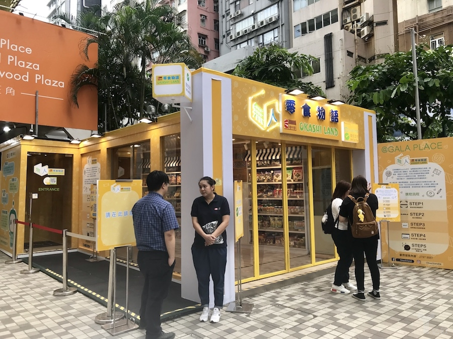
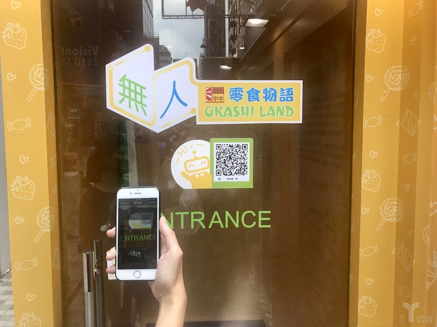
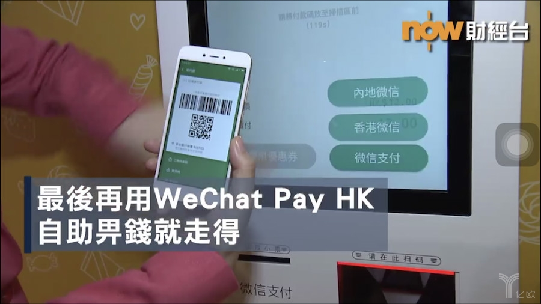

EasyGo联合四洲集团开出香港首家无人零食店，只接受微信支付
头图左为香港四洲集团主席戴德丰大紫荆勋贤，右为广州造就科技EasyGo创始人林乐昌
无人零售自去年大热，当中看好或看衰的争论声一直没有停止。作为零售业态之一，无人模式虽然尚且处于早期阶段，但仍然吸引了不少的关注。一些地产商、大型集团将无人零售当作创新业务积极引入，其中除了为人熟知的碧桂园、时代地产等，还有香港最大的食品企业四洲集团。
9月5日，四洲集团旗下的“无人零食物语”体验店在香港旺角家乐坊正式开业。无人零食物语开店为期20天，从9月5日持续至9月25日。
家乐坊地处香港旺角登打士街，是旺角地标式商场，周围聚集了星巴克、H&M、周大福等知名品牌和不少中小型餐饮店，人流密集。无人零食物语位于家乐坊的室外一层，门店面积15平米左右，店内摆有单排货架，在架商品有包含四洲紫菜、四洲鸡蛋仔等热销零食在内的百余种食品。
9月5日傍晚，一些路过无人零食物语体验店的群众围观开业活动
与内地无人零售店24小时营业不同，无人零食物语的开业时间为周一到周四的中午12点至晚上10点，周五到周日的中午11点至晚上10点。同时店内配有3名店员负责向顾客宣介，引导其完成消费。
四洲集团中国业务发展部总经理陈健樑告诉亿欧：无人零售店在香港非常少见，将该店的营业时间设置为半天是考虑到本地消费者对于无人店的消费习惯尚未养成。尽管无人零售在内地已经发展了一段时间，但香港消费者对于这种模式仍了解较少，四洲集团希望通过体验店让大家对新的零售模式形成认知。当20天的活动结束之后，四洲集团将根据门店反馈和顾客购买数据表现决定后续的开店计划。
9月6日下午一点多，也就是无人零食物语开业的第二天，亿欧再次来到门店附近，看到部分路过体验店的人驻足观望，但进店消费的人并不多。门店内一名零食物语的区域经理告诉亿欧，该店处于商圈，周围有办公人群和部分居民。按照经验，通常下午三点开始，店内的人流会逐渐增加。
9月6日下午一点多，无人零食物语附近人流情况

9月6日下午一点多，一些路过无人零食物语的人在门口围观
四洲集团创办于1971年，业务覆盖食品原料供应、零售、经营连锁餐厅等，上海素食品牌“功德林”、香港“四季”日本餐厅等都是集团旗下品牌。至于零食物语，目前仅在港澳地区开设门店，香港地区门店数量已达60家左右。
这次无人零食物语使用的技术由内地智慧零售运营商EasyGo提供，顾客可通过RFID（射频识别）及EasyGo专利感应支付门，智能感应及结算商品。由于该店内只接受微信支付，内地和香港的微信支付采用了不同的支付接口，所以在付款环节，顾客需要根据自身实际情况进行选择，并于结算后将门解锁。

无人零食物语入口处需要通过微信扫码进入

无人零食物语微信支付环节
事实上，早在今年上半年，四洲集团便萌生了试水无人店的想法。
在四洲集团看来，无人零食物语的落地是其拓展无人门店的第一步，也是集团发展内地零食市场的重要一环。“无人商店是零售业发展的大趋势，四洲集团代理及自家优质品牌将透过EasyGo的网络销售至内地，扩展销售渠道。”四洲集团表示。
对于这次的技术提供方EasyGo而言，这并非其首次为境外商户提供无人店的技术支持。借助RFID技术和微信小程序促成无人店交易，EasyGo已经轻车熟路。
EasyGo联合创始人王牧牧告诉亿欧，跨境合作的难度实际上不在于技术层面，而在于进出口贸易的审核，以及微信支付相应接口是否能够打通。通过此次合作，EasyGo也将进一步深化自己的技术解决方案，为四洲集团及其他合作伙伴提供更多支持。